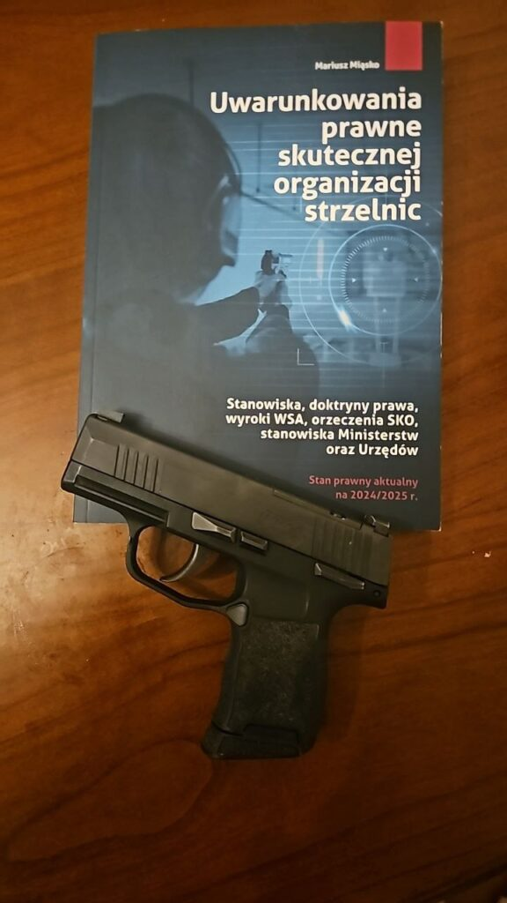
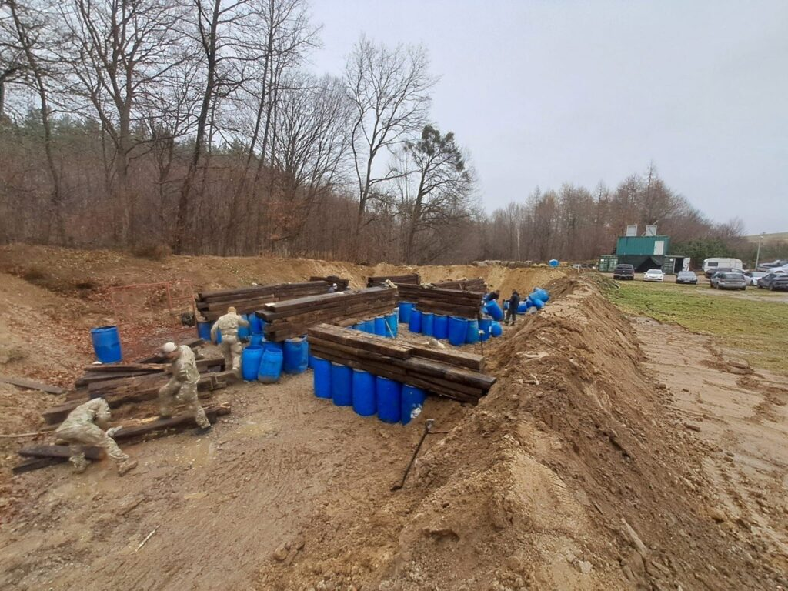
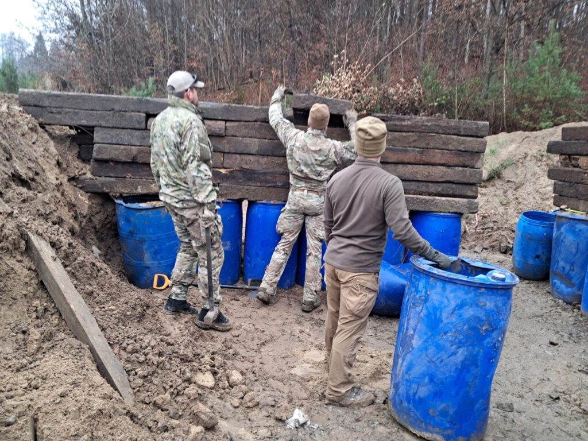
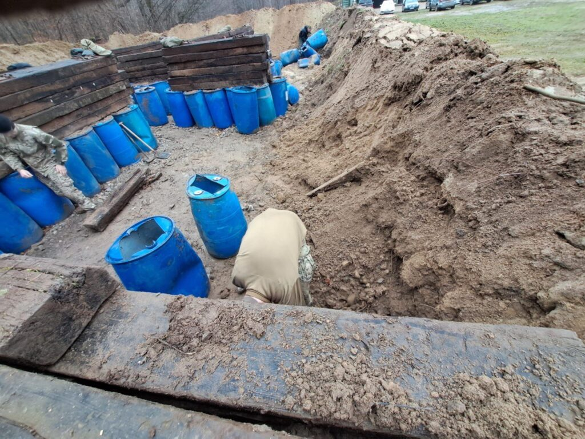
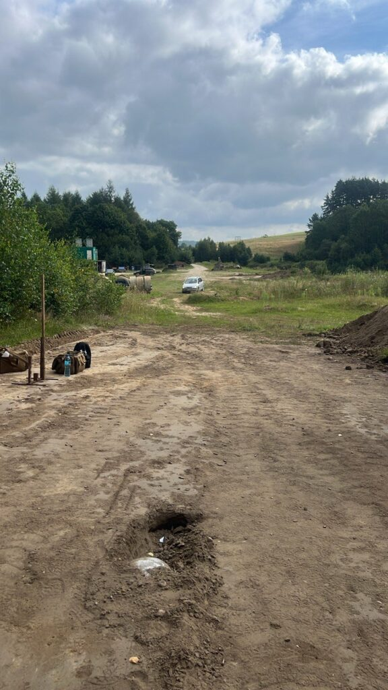
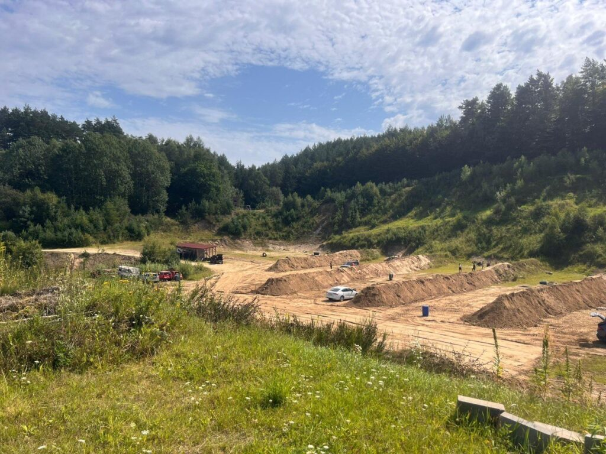
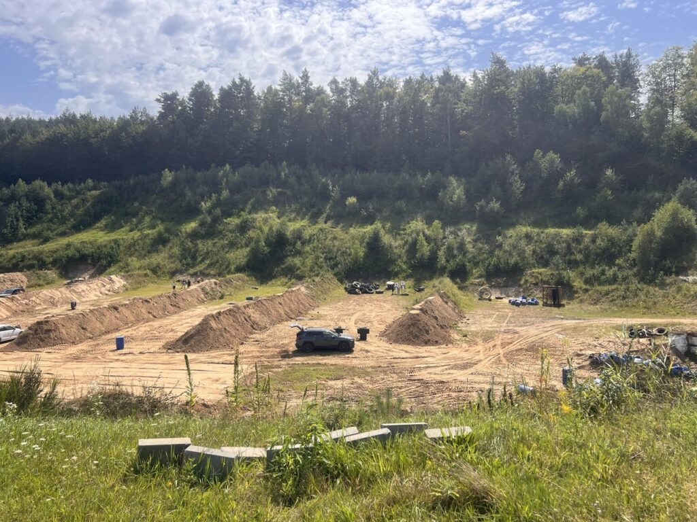
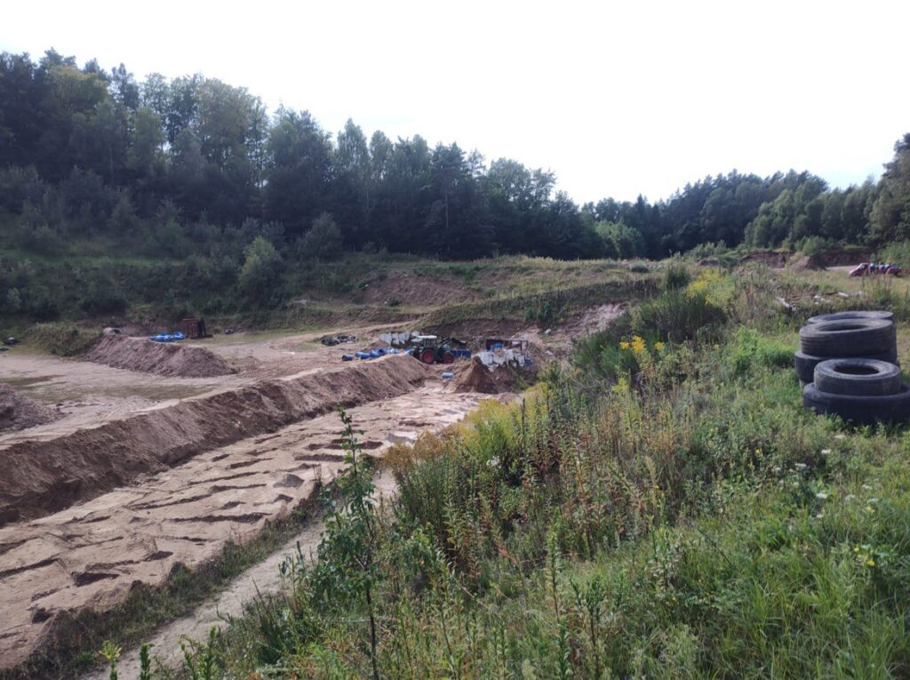
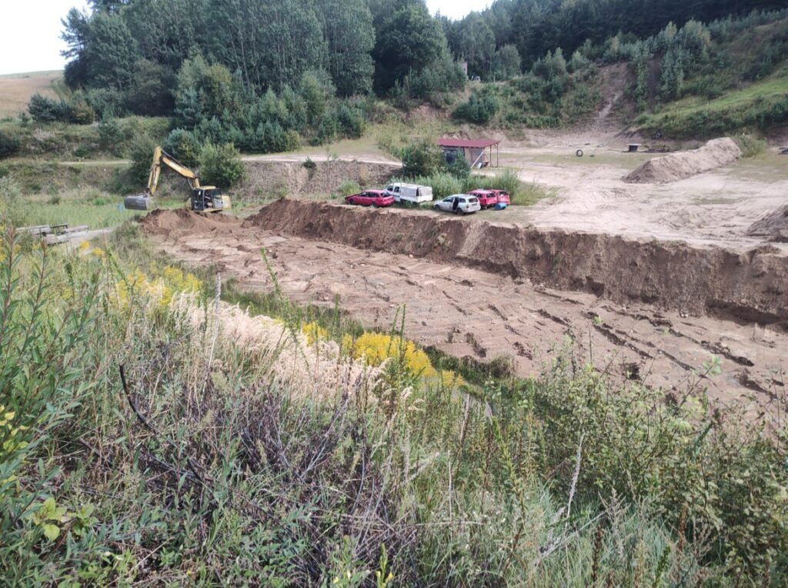

Uwarunkowania prawne skutecznej organizacji strzelnic. M. Miąsko
2026-01-28

Ostatnimi czasy trafiła w moje ręce książka Pana Mariusza Miąsko zatytułowana
„Uwarunkowania prawne skutecznej organizacji strzelnic”. Każdy praktycznie strzelec ma świadomość, że wyposażenie dobieramy do zakresu zadań, jakie przed nami stoją. Opisywana pozycja jest bardzo specyficznym „wyposażeniem strzeleckim”, przeznaczonym do prowadzenia „walki” na bardzo szczególnym „polu bitwy”, jakim jest aktualna sytuacja w zakresie funkcjonowania strzelnic w Polsce.
Nie trudno dostrzec, że w ostatnim okresie w przestrzeni medialnej wielkim z oddźwiękiem spotykają się protesty społeczne związane z funkcjonowaniem strzelnic w Polsce. Liczne strzelnice muszą mierzyć się, często niesłusznie, z negatywnym odbiorem społecznym, co zmusza strzelców do podjęcia starań o zachowanie miejsc, gdzie będziemy mogli uprawiać nasze hobby. Tej właśnie walce służyć ma oręż w postaci opracowania Mariusza Miąsko.

Podejmując się lektury tego opracowania miałem początkowo pewną wątpliwość, jak zakwalifikować tę pozycję. Z jednej strony, z racji napisania jej w znacznej mierze językiem prawniczym, przypomina ona opracowanie o charakterze naukowym, jednak bliższa analiza jej treści przeczy temu, z uwagi na formę opracowania. Z drugiej strony, z uwagi na przyjęty do jej napisania – wspomniany wcześniej – język prawniczy, nie ma ona charakteru popularnonaukowego, albowiem zapoznanie się z jej treścią dla osoby, nie posługującej się tego typu językiem i terminologią stanowić będzie znaczny wysiłek, co utrudnia popularyzację zagadnienia.


Rozwiązanie to ma natomiast inną zaletę, przemawiającą za uznaniem omawianej książki właśnie za „oręż” do walki na prawnym teatrze działań w obronie już funkcjonujących i tworzeniu nowych strzelnic. Autor na wstępie zaznacza, że koncentruje się na opracowaniu zagadnienia funkcjonowania strzelnic cywilnych, typu otwartego, a zatem względnie najłatwiejszych do stworzenia i utrzymania z punktu widzenia ich stanu prawnego (choć również ekonomicznie).

Dlaczego zatem uznaję, że książka ta stanowi „oręż”? Otóż opracowanie to stanowi zestaw niemal gotowych do zastosowania w potencjalnych sporach z organami administracyjnymi argumentów prawnych w zakresie różnych dziedzin prawa, typowych w sporach administracyjnych o funkcjonowanie strzelnic. Jest tu zatem argumentacja (najbardziej rozbudowana) w zakresie prawa budowlanego – ze wskazaniem, że w wielu przypadkach strzelnica nie podlega tej dziedzinie prawa. Oparta jest ona (podobnie jak w pozostałych dziedzinach) na treści aktów prawnych, orzecznictwie organów i sądów administracyjnych oraz stanowiskach zawartych w pismach procesowych. Tu warto zauważyć, że autor opracowania reprezentuje właścicieli strzelnic w tego typu postępowaniach – stąd dostęp do treści pism procesowych i odpowiedzi organów na te pisma oraz dogłębna znajomość tematyki i typowych argumentów pojawiających się w takich postępowaniach.
W dalszym toku autor podejmuje się w podobnym charakterze opracowania problematyki funkcjonowania strzelnic w świetle prawa ochrony środowiska, a w końcowym fragmencie problematyce zatwierdzenia regulaminu strzelnicy w świetle prawa administracyjnego i ustawy o broni i amunicji. Dzięki przyjętej formie, w tym wspomnianemu posługiwaniu się przez autora językiem prawniczym, poszczególne fragmenty i zawarta w nich argumentacja może być użyta bezpośrednio przez czytelnika w przypadku prostych, typowych wątpliwości organów administracji pierwszej instancji co do możliwości funkcjonowania strzelnicy. Przestrzegam wprawdzie przed wchodzeniem w spory z organami administracji w przypadku konieczności podejmowania działań prawnych już na etapie ewentualnego odwołania od decyzji organów administracyjnych, gdyby mimo przedstawionej argumentacji decyzja taka była niekorzystna dla właściciela strzelnicy, albowiem prowadzenie sporu administracyjnoprawnego oprócz wiedzy w zakresie przepisów prawa materialnego wymaga znajomości procedur prawnych. Tu jednak warto zauważyć, że również dla prawnika podejmującego się reprezentacji klienta w sprawie z zakresu funkcjonowania strzelnic. W przypadku bowiem prawnika, który nie specjalizuje się w problematyce strzelnic, opracowanie Mariusza Miąsko stanowić będzie znaczne ułatwienie w „rozpoznaniu” poszczególnych problemów prawnych, które może napotkać podczas reprezentowania tego typu, dość specyficznego klienta.


Zauważyć tu trzeba również, że o ile podstawową kategorią strzelnic, których dotyczy opracowanie są strzelnice otwarte, nie stanowiące obiektów budowlanych, to jednak poszczególne poruszane w nim problemy pojawiać się mogą również w przypadku obiektów o innym charakterze, przy zastrzeżeniu, że część argumentacji będzie musiała być zmieniona i dostosowana do specyfiki danego obiektu.


Reasumując, omawiana pozycja stanowić będzie wartościowy nabytek w biblioteczce każdej osoby prowadzącej strzelnicę (czy to przydomową, czy komercyjną) a także planującej taki obiekt utworzyć. Z tego względu mam głęboką nadzieję, że przyczyni się ona do popularyzacji strzelnic w Polsce i zachowaniu tych, które już funkcjonują. Z czysto utylitarnych względów sugeruję jedynie, by w kolejnych (oby licznych i aktualizowanych) wydaniach, przenieść problematykę zatwierdzenia regulaminu strzelnicy na początkową część książki. Jest to temat warunkujący funkcjonowanie strzelnicy i w wariancie optymistycznym będzie on wystarczający dla rozwiązania „problemu” jej powstania. Dopiero w przypadku zaistnienia sporów z organami administracji konieczne będzie sięgnięcie do dalszych rozdziałów. Oczywiście warto znać metody usuwania zacięć wcześniej, niż do nich dojdzie, lecz w przeciwieństwie do strzelania, w przypadku działań prawnych mamy czas na uzupełnienie wiedzy kiedy mamy już przygotowaną w domu instrukcję obsługi. Piszę o tym dlatego, że wspomniany język prawniczy może być dość „odstręczający” dla czytelnika i możliwość sięgania do tylko tych fragmentów książki, które są absolutnie niezbędne w konkretnym przypadku może być wartością korzystną dla odbioru omawianej pozycji. Powyższa uwaga nie zmienia jednak ogólnej pozytywnej oceny książki.
Autor Graffi
W celu zakupu ostatniego wydania, kontakt bezpośredni: biuro1@viggen.pl lub pod numerem +48 509 982 577 z dopiskiem Andrzej Gajos.
Zdjęcia zostały zrobione podczas rozbudowy osi i budowy nowego killhousu na mojej ulubionej klubowej strzelnicy czyli Podwórzu Koguta w Zielnowie, KSI.